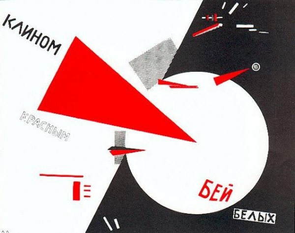

-
Good Future, Bad Future: on the Unauthenticated Avant-Garde
by Jeffrey Kirkwood January 25, 2011
El Lissitzky, Beat the white with the Red wedge, 1919. Via wikivisual
The paintings in the Denver Museum of Contemporary Art’s winter exhibition, Orphan Paintings: Unauthenticated Art of the Russian Avant-Garde were found, as if in a time capsule filled with Adorno’s fantasies of late capitalism, in an “unclaimed shipping container in German customs.” Subsequently, Ron Pollard, an architectural photographer in Denver, came across the inventory of unsigned paintings on, yes, eBay. Recruiting his brother Roger and a friend, Brad Gessner, the three set about purchasing the paintings in increments from the insurance administrator in Aachen, Germany who had originally bought the contents of the jettisoned freight (a more complete account of the story is available on the MCA’s website). Since then, the ad hoc group of enthusiastic collectors has hired forensic writing specialists and conservators whose expertise has given them optimism about the authenticity of their acquisitions, though their provenance remains impossible to definitively establish. And herein lies the official curatorial impetus for the show: “Can an art experience be authentic even if the status of the work of art remains questionable?”
Aleksander Rodchenko, Ornament Girls, date unknown. Via Crowds Basement
What the press release belies in its appeal to a naïve phenomenology, unencumbered by any prior art historical knowledge—an approach reproduced in the story of the collection’s acquisition by art world outsiders—is that both the conceptual apparatus of the show and our interest in its objects derives from a strong nuclear force internal to the collection, as opposed to the weak nuclear force of its story. These are not anonymous personal artifacts or wayward antique photographs in a flea market rummage bin, and thus, as the owners’ persistent attempts to legitimize the paintings suggests, they are more lost than found objects. They are paintings “in the style of” Malevich, Rodchenko, El Lissitzky, Moholy-Nagy, and Tatlin (among many others) which, together, suggest a formal coherence that is anything but naïve. On the contrary, the revolutionary historical moment of which they are supposed exemplars was a maelstrom of manifestos, formal dispute, ideological loud-mouthing, calculated outlandishness, pseudo-scientific speculation, and high decibel debate. This was a period when artists were very deliberate about what art was supposed to do and for whom. The modes of abstraction showcased here have very different valences depending on which work one is considering, and it is safe to assume that no matter who among the possible artists one selects, the colorful shapes are not mere objects for delectation (the press release calls it “appreciation”), or they wouldn’t be, if this was in fact a show about the Russian avant-garde. Indeed, even without assuming these works are authentic, there is an expectation that they stage a conversation (or a screaming match) about the purpose and stakes of art at the time of their alleged creation; about the artistic object, organization versus production, or the purpose of line. Yet when one enters the main room, where a painting “in the style of” Malevich’s suprematist work neighbors one “in the style of” a Rodchenko, near one “in the style of” El Lissitzky, the paintings stand in a sepulchral silence; their shabby, neglected edges diminishing rather than amplifying the auratic effect implied by the museum’s “agnostic” position towards their authenticity. And perhaps that’s the show’s virtue.
In the style of Kazimir Malevich, date unknown. Via MCA
One of the approximately twenty works in the main room is a mixed media piece that seems a lot like a Malevich. The figural silhouette looks like the head of a sculptural armature assembled from fluted shapes. The coloring conjures a techno-fetishistic vision of the new (but now antiquated) man, one built from the burnished metal bits of an older machine. The monocular eye of the figure is split and displaced as if painted on oppositely moving tectonic plates, underscoring the simultaneous contingency and sovereignty of vision. This recalls not only the more general debates about positivism and scientistic approaches to art and perception among Russian avant-gardes but also Malevich’s own theoretical writings. What is even more apparent, however, is the newspaper cutout of the Mona Lisa composing one of the shapes just right of the silhouettes’ center. Complete with its caption, and crossed out with red pencil, the not yet groan-worthy gesture of prankishness cannot fail to produce an association with Malevich’s 1914 cubist style collage, Composition with Mona Lisa, which also included a captioned picture of the Mona Lisa crossed out in red. Yet by presenting a temporally circumscribed set of works that are severed from their historical situation the show simultaneously beckons and categorically denies even these types of superficial comparisons. The result is an impossible latticework of counter-factual suppositions about the formal operations on display and a question about what, besides “experience,” the viewers are warranted to do when looking at such a collection.
Kazimir Malevich, Composition with Mona Lisa, 1914. Via aiwaz.net
If you believe, along with someone like Peter Bürger, in the historicity of aesthetic categories, particularly with respect to avant-garde movements, then didactics do little to illuminate the original conditions of these paintings’ production or, for that matter, that of the paintings they look like. The premises of the exhibit do not exceed a novel collision between the possibility of the collection’s authenticity and the curious circumstances of its discovery (circumstances that make its authentication unlikely). But while the “experience” of the works, which are mostly abstract, frequently insists on a theoretical scaffolding that the museum refuses to provide — and which the paintings themselves can only hint at — this moment of frustration serves as a kind of instructive aporia. When, in the early 1920s, artists like Rodchenko pursued a machine aesthetic, employing industrial materials in order to “build” artworks with a meaningful social-utopian function, the artwork was intentionally forced into a direct confrontation with the fundamental, material means for its creation—industrial materials, technologies, and techniques, representing the speed, efficiency, and automation of new forms of production. Deploying these productive forces in the work was thought not only crucial to art’s participation-in and representation-of the ideological aspirations of the artists, but also instrumental in the transformation of the sensorium. Modes of perception and consciousness were the products rather than the sources of the material conditions they observed, and therefore, art that engaged those conditions could reformulate the terms of its own reception. In the case of the Orphan Paintings, however, the artworks are submitted to a sensorial regime instructed or even governed by economic conditions posterior to the paintings’ own utopian visions. Instead of making something of the viewer, the viewer is asked to make something of the artworks; a herculean task that ultimately seems to prove the dependence of “experience” on its material-historical situation. It is fitting that these paintings should arrive at their future in an abandoned metal freight to be sold on eBay—a future in which economic speed and efficiency have themselves become abstract and yet can no longer be represented abstractly.
Kazimir Malevich, Suprematist Composition, 1916. Via Sotheby's
As a kind of forgotten remainder of a material dialectic, these works can be viewed as a pure surplus without a surplus value (think of Malevich’s 1916 Suprematist Composition fetching $60 million at Sotheby’s in 2008). They are no longer really art according to the market (as they were turned down by auction houses), nor do they participate in any existing social or political discourse. In the moment when the craving for material verification becomes most aggravated—the point at which we most desire some physical documentation linking these paintings to their ostensible origin—these paintings become apt tools for instructing us on the contemporary, immaterial conditions required for the production of artwork. The viewer’s inability to securely situate the apocryphal works historically, coupled with the paintings’ apparent preoccupation (as potential works of the avant-garde) with the historical and material conditions of their reception, prompts a meditation on the current conjecture preventing us from making much of these images. In this way, the show serves as a grim, if useful, epilogue to avant-garde utopianism. While, at the same time, precisely by dismantling bourgeois notions of authorship, the anonymous circumstances for the reception of these paintings successfully realizes certain aspirations of the avant-garde, albeit through a glitch in a particularly dystopian form of advanced capitalism.

{kind=link}
{kind=link}
1 Comment
Monday Links – The skinny cans for skinny gals edition | Lea Zeltserman
[…] Good Future, Bad Future: on the Unauthenticated Avant-Garde – Idiom What to do about a cache of Russian avant-garde paintings discovered in an unclaimed shipping container in Germany? […]